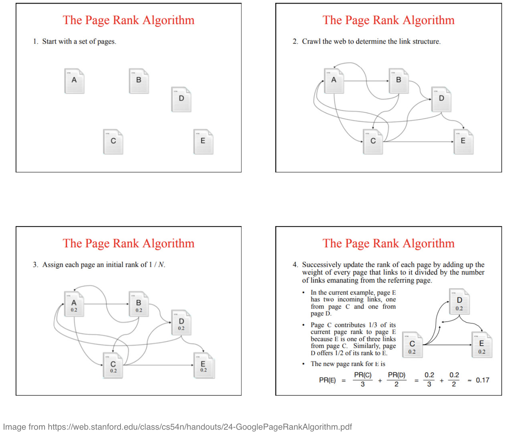
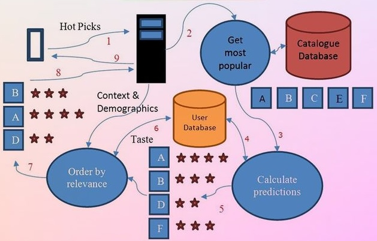
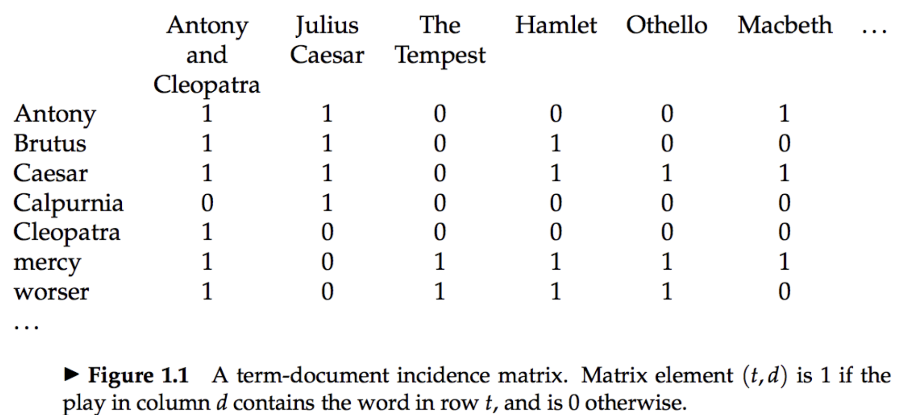
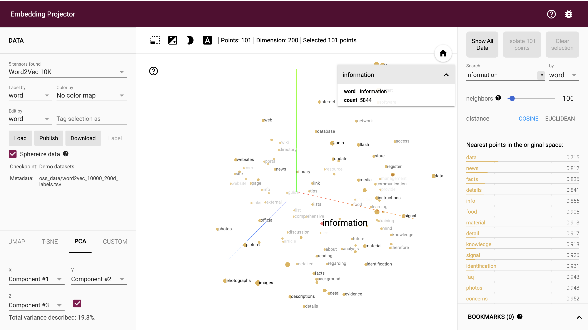
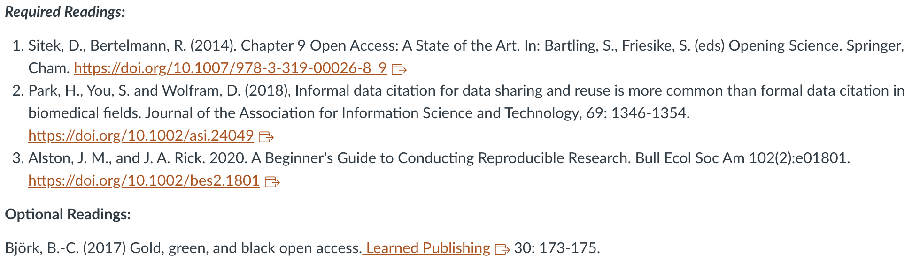

IS vs IR
Information Seeking
- It refers to the broader process in which individuals actively attempt to acquire information to satisfy their information needs or goals
- It encompasses the entire journey that users undertake to discover, locate, and obtain relevant information
- It involves not only the actual retrieval or searching for information but also the formulation of information needs, the selection of appropriate search strategies, and the evaluation of retrieved information
- This concept considers the cognitive and behavioral aspects of how individuals seek information, including their motivations, preferences, and decision-making processes
IS vs IR (Cont.)
Information Searching
- It is a specific activity within the information seeking process, emphasizing the action of actively looking for information
- It refers to the actual process of querying an information system (such as a search engine or a database) to find relevant information
- It involves formulating search queries, submitting them to the system, reviewing search results, and refining search strategies based on the retrieved information
- While information searching is a critical step in information seeking, it is just one aspect of the overall process, which also includes other activities such as browsing, evaluating sources, and synthesizing information
IS vs IR (Cont.)
Information Retrieval
It focuses on the technical and computational aspects of accessing and retrieving relevant information from a collection of data or documents
It involves the designing, implementation of systems and algorithms to match user queries with relevant documents or data items
It encompasses techniques such as indexing, ranking, relevance scoring, and retrieval models to efficiently and effectively retrieve information based on user queries
While information retrieval primarily deals with the mechanisms of retrieving information, it is a component of the broader information seeking process
Google Search Algorithm

Netflix Recommendation Algorithm

Search: Finding the word
- The simplest form of document retrieval is for a computer to do this sort of linear scan through documents
- start at the beginning
- read through all the text
- if you find a match for the string such as “Brutus”, include the document in the result set
Search: Build an Index
- For each document
- record whether it contains each word out of all the words Shakespeare used
- Result is a term-document incidence matrix

- Now we have two kinds of vectors:
- one for each term, showing which docs it appears in
- one for each doc, showing which terms appear in it
Retrieval Model
1. Boolean Model: It is based on Boolean logic, where documents are represented as sets of terms. Queries are also represented as Boolean expressions (using AND, OR, NOT operators), and documents either match or do not match the query.
Retrieval Model (Cont.)
2. Vector Space Model: In this model, documents and queries are represented as vectors in a high-dimensional space, with each dimension corresponding to a term. The similarity between documents and queries is calculated using techniques such as cosine similarity.
https://projector.tensorflow.org/
Retrieval Model (Cont.)
3. Probabilistic Model: These models compute the probability that a document is relevant to a given query such as topic modeling.

4. Fuzzy Retrieval Models: These models relax the requirement for exact matches between query terms and document terms, allowing for approximate matches based on similarity measures such as edit distance or phonetic similarity.
Retrieval Model (Cont.)
5. Term Frequency-Inverse Document Frequency (TF-IDF): TF-IDF is a statistical measure used to evaluate the importance of a term within a document relative to a collection of documents. It assigns weights to terms based on their frequency in the document and their rarity in the corpus.
Evaluating IR
Effectiveness of an IR system is based on its exhaustivity & specificity
Exhaustivity is the degree to which subject matter of a given document has been reflected through index entries
To attain exhaustivity, system has to select as many keywords as possible to represent the idea put forward in the document
Specificity refers to how broad or how specific are the terms or keywords chosen under a given situation. More specific the terms, better is the representation of the subject through the index entry
Recall & Precision measure the effectiveness of a systems where
– Recall = No. of relevant documents retrieved / No. of relevant documents in the collection
– Precision = No. of relevant documents retrieved / Total no. of documents retrieved
More Exhaustivity, higher recall & lower precision
More Specificity, higher precision & lower recall
Recent Developments
- Algorithms like neural networks have been applied to tasks such as document ranking, query understanding, and relevance prediction, leading to significant improvements in retrieval performance
- IR has traditionally been very document and text focused
Recent Developments
- Fact or knowledge retrieval
Each requires an underlying model of the object and of the associated retrieval tasks
Discussion
Abigail
What type of search would you do to find music? How does the limitations of being able to search music affect research about music? How might music search be similar or different to searching other types of audio such as interviews?
Logan
If AI acts as a solution to get us closer to human-thinking information retrieval, what issues will still exist in machine-based searches?
Cassiani
When determining what results are most relevant, how are things like the word occupying a different part of speech vs related words/synonyms in results balanced in terms of ranking results?
Olivia
What work should search engine engineers be doing to decrease and possibly eliminate the presence of algorithmic bias?
In-Class Activity
Olivia: I wonder how others in the class search queries? Which of the strategies listed in this section (footnote chasing, citation searching, journal run, area scanning, subject searches in bibliographies and abstracting and indexing, and author searching) do you use?
Chloe: Are there any circumstances where berrypicking would not be the best search method? How do you determine when to use berrypicking or instead use more direct search functions with more concise paths?
Nora: How have the views and usage of berrypicking changed since then? With the explosion of the internet and reliance on social media, how has information retrieval and search engines changed since the time of this article?
Submission by TODAY at 4 PM
Upcoming Deadlines
Weekly Discussion Post
- Week 12: Open Access [March 31, 2024 (Sunday) by 11:59 PM]
Start Prepping for:
- Group A-K Final Project Presentation (April 2)
- Group L-S Final Project Presentation (April 9)
- Professional engagement post (April 9)
- Technical learning post (April 23)
- Final Paper (April 30)
Next Week (April 2): Presentations + Open Access

Office Hours
Open Office Hours: Mondays 1-2 PM; Wednesdays 2-3 PM
Dr. Manika Lamba
Email: manika@illinois.edu
Dr. Liliana Giusti Serra
Email: lilianag@illinois.edu